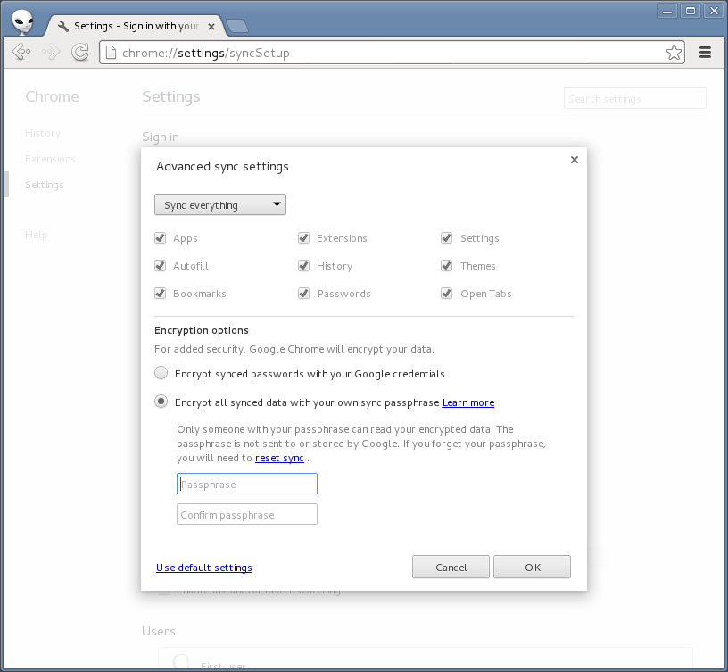

Despite Google’s statement, they still have access to your wifi passwords
UPDATE: The Android bug tracker isn’t the correct place to ask Google to fix this bug. The backup/restore feature is part of the proprietary Google apps for Android, not the open source Android project. This thread on the Google product forums is the correct place.
Earlier this week Ars Technica covered a bug report I posted on the Android issue tracker about the “Backup and restore” feature not offering encrypted backups.
Because there’s no option to encrypt your backup data on your Android device with a passphrase that you set, Google has the capability to see the plaintext data, including all your saved wifi passwords. Google can then be compelled to give up this data (and any other user data that they store) to the US government when requested to do so.
Google responded to Ars Technica:
Our optional ‘Backup my data’ feature makes it easier to switch to a new Android device by using your Google Account and password to restore some of your previous settings. This helps you avoid the hassle of setting up a new device from scratch. At any point, you can disable this feature, which will cause data to be erased. This data is encrypted in transit, accessible only when the user has an authenticated connection to Google and stored at Google data centers, which have strong protections against digital and physical attacks.
First, it’s great the backup/restore feature is optional. It’s great that if you turn it off Google will delete your data. It’s great that the data is encrypted in transit between the Android device and Google’s servers, so that eavesdroppers can’t pull your backup data off the wire. And it’s great they they have strong security, both digital and physical, at their data centers.
However, Google’s statement doesn’t mention whether or not Google itself has access to the plaintext backup data (it does). Not how easy it is for an attacker to get at this data, but how easy it is for an authorized Google employee to get at it as part of their job. This is important because if Google has access to this plaintext data, they can be compelled to give it to the US government.
In the bug report I didn’t mention being worried about hackers getting at the data. I’m worried about Google having the ability to hand this data to the US government when they receive requests for user data:
I don’t think it’s rational to expect users to trust Google with their plaintext passwords when Google can be compelled to give this data to the US government when they request it.
I don’t think Google is being malicious here. I just think they threw together this backup/restore feature before building in appropriate security measures. The bug report that I filed is simply a feature request: make it possible for users who don’t want to give Google our plaintext wifi passwords (and other backup data) to still use this feature.
Luckily, Google itself already knows exactly how to do this. The Chrome web browser saves apps, extensions, settings, autofill data, browser history, themes, bookmarks, open tabs, and passwords.
Chrome also lets users sync this data with Google’s servers. Clearly this is a lot of sensitive data, so Google offers to let people encrypt this data with a passphrase, on their own computer, before sending it to Google’s servers:

If the user forgets this passphrase they lose all their data.
Offering this same feature (letting users encrypt their backup data with a passphrase before sending it to Google) for Android is the only way that Google will be able to offer the backup/restore without having access to the plaintext data that’s being backed up.
The correct response for Google at this point is to label issue 57560 (“Backup and restore” should offer encrypted backups) as a security bug, set the priority to High, and promptly release an update to Android that fixes this bug.
I also want to point out that this issue isn’t unique to Android. Apple’s iCloud suffers from the same problem. In fact, any time you use a service that lets you back things up in the cloud, if you’re not encrypting it on your device with a passphrase that you choose, you’re giving your data to a third party that’s vulnerable to government requests for data. It’s also important to remember that the US government isn’t the only one that requests user data, all governments do. Choosing non-US cloud providers isn’t a solution.
Storing data in the cloud has become a huge convenience for computer users. Even in light of dragnet unconstitutional surveillance of the Internet by spy agencies, I don’t think it’s necessary to give up storing data in the cloud. We just need to store encrypted data in the cloud where users have the keys, not the cloud providers.